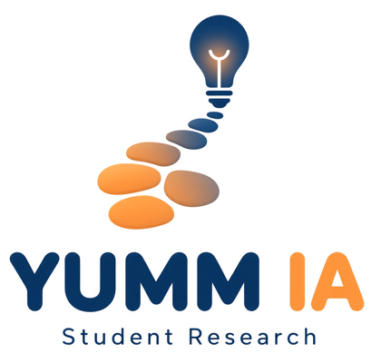

De una idea a tu defensa de tesis, piedra por piedra.
YUMM IA te guía en la construcción de tu protocolo de investigación con 29 módulos que validan cada decisión antes de dar el siguiente paso.
- Sin registro
- Se guarda en tu navegador
- Exporta a Word y PDF
Tres pasos que se repiten en cada módulo
No necesitas saber metodología de antemano: el asistente te pregunta, revisa y te dice qué ajustar.
Responde
Cada módulo te hace preguntas concretas sobre tu investigación, con ejemplos y pistas.
Valida
YUMM IA revisa en tiempo real verbos, coherencia, formatos y requisitos mínimos.
Avanza
Al pasar la validación se desbloquea el siguiente módulo. Al final exportas tu protocolo.
Escribe un objetivo de investigación
Así se ve una validación en tiempo real: el asistente detecta si inicias con un verbo en infinitivo y en qué nivel de la Taxonomía de Bloom se ubica.
Una ruta que se adapta a tu enfoque
En el Módulo 10 eliges tu enfoque y YUMM IA activa u omite módulos. Compara las rutas:
Confiabilidad con Omega de McDonald
Más preciso que el Alfa de Cronbach cuando tus ítems tienen cargas distintas. Ingresa cargas factoriales, una matriz de correlaciones o tus datos brutos y obtén la interpretación al instante.
¿Tu protocolo es coherente de principio a fin?
YUMM IA cruza las decisiones de distintos módulos para detectar contradicciones metodológicas.

YUMM IA · Asistente de Investigación Metodológica
El sistema opera como andamiaje cognitivo a través de 29 módulos secuenciales, desde la delimitación del tema hasta la simulación de la defensa de tesis. Funciona íntegramente en tu navegador: HTML, CSS y JavaScript, sin servidor ni dependencias. Tus datos se guardan en tu equipo (localStorage) y puedes exportarlos a Word y JSON.
- Autores
- Dr. Francisco José Medina Ocampo · Dra. Elda Verónica Martínez Mena
- Institución
- Universidad Tecnológica de Cancún
- Versión
- 1.0 · Noviembre 2026
¿Cómo funciona?
Bloqueo secuencial
El Módulo N+1 permanece deshabilitado hasta que el Módulo N pase todas las validaciones. Tu avance se guarda automáticamente.
1→2Bifurcación por enfoque
Cualitativo omite Hipótesis, Variables y Operacionalización y activa Categorías. Cuantitativo hace lo contrario; Mixto integra ambos.
⑂Exportación
Al completar la estructura final se habilitan las exportaciones del protocolo a Word, PDF y los datos estructurados en JSON.
.doc